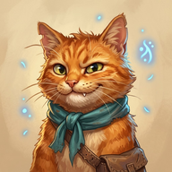

La Guilde des Runes
Le jeu de dés et de cartes, en plein écran sur ton téléphone.
🤖 Sur Android : l’appli « La Guilde »
📥 Télécharger l’appli (version 1.2) Elle ne passe pas par le Play Store : la première fois, Android demande une autorisation.- Touche Télécharger, puis ouvre le fichier reçu (« la-guilde… »).
- Si Android dit « pour votre sécurité… » : touche Paramètres, active « Autoriser cette source », puis reviens.
- Touche Installer. Si Play Protect s’inquiète (appli inconnue de lui) : « Installer quand même ».
- Ouvre La Guilde par son icône (Moustache).
🍏 Sur iPhone : l’icône sur l’écran d’accueil
Apple n’autorise pas d’appli en dehors de son magasin, mais ceci donne le même plein écran.- Ouvre cette page dans Safari.
- Touche Partager (le carré avec une flèche ⬆).
- Touche « Sur l’écran d’accueil », puis Ajouter.
- Ouvre le jeu par l’icône de Moustache : plus de barres de Safari.
💾 Ta progression
L’appli (ou l’icône) garde sa propre mémoire. Pour retrouver tes héros : dans le jeu, ⚙️ Paramètres → ☁ Mon compte et ma sauvegarde, puis « J’ai déjà un compte » avec ton code de récupération.
📷 Pour tes amis
Ils scannent ce code avec l’appareil photo de leur téléphone :
perso.elvanys.fr/guilde/installer.html